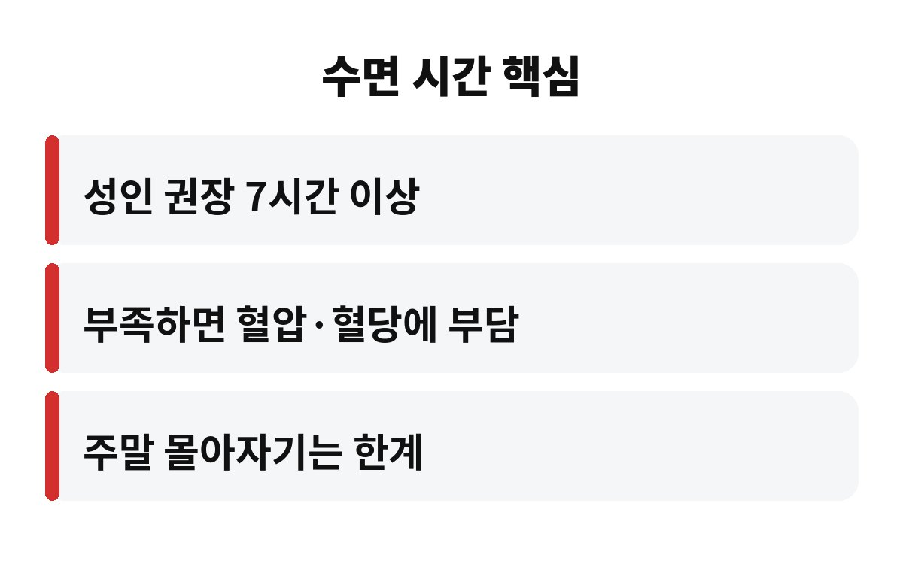
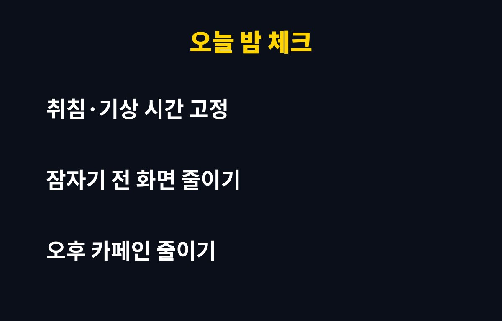

수면 시간이 7시간 미만인 날이 이어지면 혈압과 혈당 관리에 불리하다는 연구가 많고, 성인 권장 수면 시간은 보통 7시간 이상으로 봐요. 잠을 줄여서 번 시간이 몸에는 빚으로 쌓이는 셈이죠.
야근하고, 폰 보다가, 그래도 아침엔 일어나야 하는 직장인이라면 "나는 5~6시간이면 충분해"라고 믿고 계실 수도 있어요. 정말 괜찮은지, 어디서부터 문제가 되는지 궁금하시죠?
성인 대상 연구들을 보면 7~9시간 자는 사람들의 건강 지표가 가장 안정적으로 나오는 경향이 있어요. 그래서 학회와 보건 기관들도 성인에게 하루 7시간 이상을 권해요. 물론 사람마다 필요한 양은 조금씩 달라요.
중요한 건 "며칠 못 자고 하루 몰아서 자면 되지"가 잘 통하지 않는다는 점이에요. 평일에 쌓인 수면 부족을 주말에 다 갚기는 어렵다고 알려져 있거든요.
잠이 모자라면 몸이 계속 긴장 상태에 있어서 스트레스 호르몬이 늦게까지 높게 유지되는 경향이 있어요. 그러면 혈압이 밤에도 충분히 내려가지 못하고, 인슐린이 일을 덜 하는 쪽으로 기울 수 있어요.
식욕을 조절하는 호르몬도 흐트러져서, 피곤한 날 야식과 단 음식이 유독 당기는 것도 우연이 아니에요. 수면 시간 부족이 체중과 혈당까지 이어지는 연결고리가 여기 있죠.
| 수면 시간 | 일반적인 해석 |
| 6시간 미만 | 부족 신호, 몇 주 이어지면 관리 필요 |
| 7~9시간 | 성인 권장 범위 |
| 9시간 넘게 매일 | 다른 원인이 있는지 살펴볼 필요 |

같은 7시간이어도 새벽 3시에 자서 10시에 일어나는 것보다, 밤 12시에 자서 7시에 일어나는 쪽이 컨디션이 낫다고 느끼는 분이 많아요. 몸의 생체시계가 해가 뜨는 흐름에 맞춰져 있기 때문이에요.
밤늦게까지 밝은 화면을 보면 잠을 부르는 멜라토닌 분비가 늦어져서 잠드는 시간이 더 밀리기 쉬워요. 결국 늦게 자는 습관은 수면 시간과 수면의 질을 같이 깎아요.
거창한 건 필요 없어요. 딱 세 가지만 해보세요.

요즘 하루 평균 몇 시간 주무시나요? 댓글로 남겨주시면 같이 점검해 봐요. 도움이 되셨다면 구독하고 다음 건강 이야기도 받아보세요.
※ 이 글은 일반적인 건강 정보이며 진단·치료를 대신하지 않아요. 수면 문제가 계속되면 전문의 상담을 권장합니다.